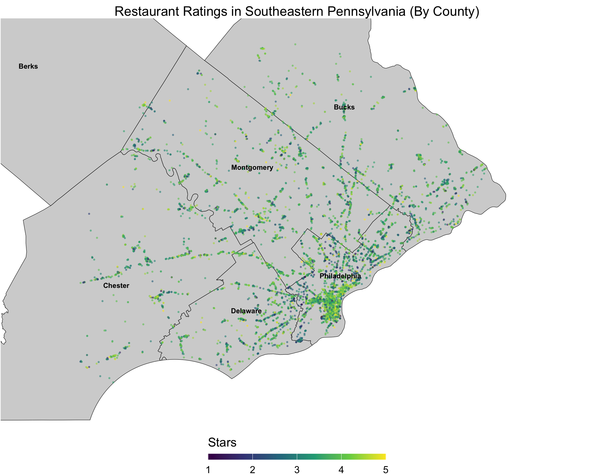

Fantastic Eats and Where to Find Them: Southeastern PA Version
Where to find fantastic eats?
 Photo from: Yelp
Photo from: Yelp
It is hard for anyone to find a good restaurant, no matter if they stay in the same place for a long time or just move in like us. When people do not know where to eat, rating apps such as yelp would be a key resource for people to use. However, it led to an interesting question to us: what factors could correlate with rates or stars.
Restaurants Distribution
Upon data analysis, we condensed the restaurants information across different locations and categories in the Pennsylvania from the Yelp data (data source), analyzing the distribution of restaurants in the Pennsylvania.
Read Regional Analyzation here.
Rating-Associated Factors
We made an in-depth Exploratory Analysis about restaurant rating, and at last we identified the indicators of rating and constructed the model for predicting the restaurants ratings.
Match for Special Needs
Try our App to get your ideal restaurant in PA !
Report
Browse our report for key insights from our analysis!
Creators
- Yutong Chen (yc4617)
- Tingcheng Pan (tp2859)
- Shiying Wu (sw3455)
- Yifan Xu (yx2857)
Project Overview
Click on the video below to learn more about the features of this site and enjoy a summary of our key highlights!
Restaurant Around Southeastern PA
The map shows that most restaurants in Southeastern Pennsylvania are clustered around Philadelphia, reflecting its status as a densely populated urban center. The majority of ratings are green, indicating an average star rating around 4. Suburban counties like Montgomery and Bucks also have notable restaurant density, but their distribution is more spread out compared to the concentrated clusters in Philadelphia.
ggplot() +
geom_sf(data = pa_counties, color = "black", fill = "lightgrey", size = 0.8) +
geom_point(
data = mergedPA,
aes(x = longitude, y = latitude, color = stars),
size = 0.5, alpha = 0.5
) +
geom_sf_text(
data = pa_counties,
aes(label = NAME),
size = 3, color = "black", fontface = "bold"
) +
coord_sf(xlim = c(-76, -74.5), ylim = c(39.7, 40.5), expand = FALSE) +
theme_void(base_size = 15) +
theme(
legend.position = "bottom",
plot.title = element_text(hjust = 0.5, size = 16)
) +
guides(color = guide_colorbar(
title.position = "top",
barwidth = 15,
barheight = 0.5
)) +
scale_color_viridis_c(option = "D", name = "Stars") +
labs(
title = "Restaurant Ratings in Southeastern Pennsylvania (By County)",
color = "Stars"
)
Looking for some fantastic food?
Looking for fancy places to eat for date?

For more informartion about yelp.data and some nice restaurant, check out https://www.yelp.com/dataset